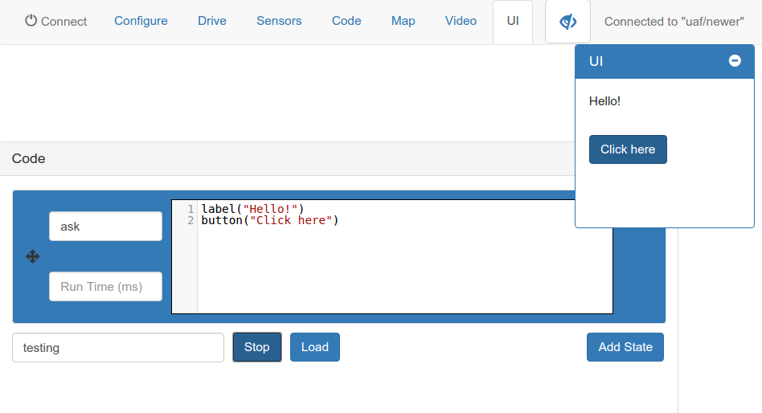
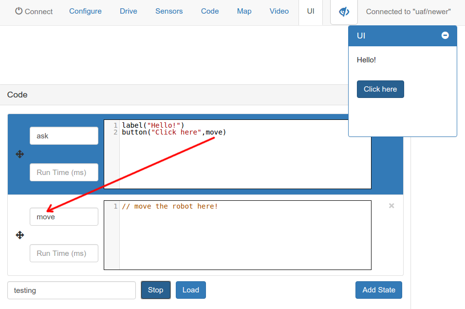
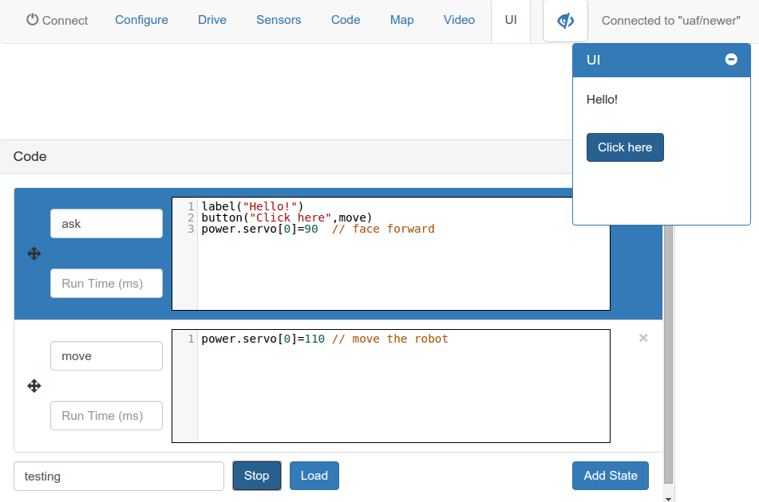

Step 1:
- Connect to your quizbot to the internet with the backend program
- Connect to your robot at RobotMoose.com's Robots page
- Open the Code tab, and make a new state called "ask".
- Enter this code to make a new label appear in the User Interface (UI) tab. This is how you'll have the quizbot ask you a question!

Step 2:
You can add a button to the UI by calling this code.
We'll be using buttons to provide the user with answers.

Step 3:
When the button is clicked, you can tell the button what state to go to.
Here, we added a state called "move".
This is where we'll make the robot move in response to the questions.

Step 4:
Set the servo power values in each state to make the robot move!

Step 5:
Add a timeout to the move state, and a loop state to make the quizbot go back to the ask state, to ask another question.

Challenge:
How would you add more possible answers?
Can you make the Quizbot
nod its head yes for correct answers, and shake no for incorrect answers?